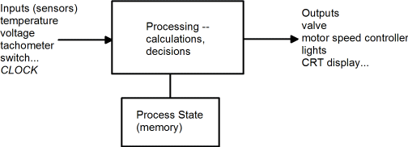
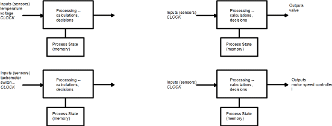

| Previous Appendix | Next Appendix | Index | Search the Text |
We have seen that the microcontroller acquires information from sensors (input devices), processes the information, and produces output that controls devices. This was condensed into a figure back in the first chapter:

When the microcontroller must handle multiple devices, and those devices are independent, we might want to "simplify" the design by having multiple microcontrollers some handling inputs, some handling outputs, and some scheme (not shown) to allow each processor to access memory of other processors (so the valve driver can see the latest temperature, for instance). Like this:

Using multiple processors to divide the effort is called multiprocessing. We can actually do this with a single microcontroller using a concept know as multitasking. This allows a single processor within the microcontroller to perform multiple processing tasks. Of course, since there is a single CPU the tasks are not executed simultaneously, as they would be with multiprocessing. Instead, the CPU must somehow be shared among the processing tasks. One scheme that we could use is to have a timer interrupt (such as the RTI) switch between tasks. If each task has its own stack and a memory location is reserved to have the current stack pointer value for each task, then the interrupt could simply save the current stack pointer, switch to the stack pointer for the new task, and return from interrupt. Any number N of tasks can be handled this way, with each task getting 1/N the total CPU cycles.
However, typically some tasks require considerably more CPU cycles to execute than others, or the needs of each task might change over time. Another scheme, called cooperative multitasking lets a task execute as long as it wants, and then yield the processor back to the task scheduler, which then moves on to the next task that desires to run. This works well as long as no task "hogs" the CPU, preventing some other task from running. In this case a preemptive multitasking is needed so that control can be forced to the task that must run.
Looking at the existing 68HCS12, we have a preemptive feature in the interrupts. Each interrupt driven input process and each interrupt driven output process is a task like in the figure above. As we will see in the next application program example, we can implement general processing tasks as interrupt routines by using timer interrupts. While this example controls a single traffic light, it can be easily expanded by adding more state machines (processes) to control multiple traffic lights.
Using state machines allow each particular process to yield the processor when it is waiting for time to pass or an external event to occur. It is important not to take so much time in an interrupt service routine (with interrupts disabled) so that other interrupts cannot be served in a timely manner. However, if the interrupt service routine re-enables interrupts so other interrupts can be serviced, it is important that the interrupt service routine completes before its interrupt occurs again. If that happens, effectively a second copy of the interrupt service routine will start running, which usually has disasterous effects. In order to solve the problem the interrupt service routine must be written so it is reentrant. Namely, it must be written with the knowledge that it can be executing simultaneous with itself.
If the timer interrupt is occuring at a one millisecond rate, it needs to complete before one millisecond has passed. If one of the state machines in the timer interrupt service routine might take more than one millisecond to execute, interrupts can be enabled during the execution of that state machine providing a mechanism is in place to prevent it reentering.
To do this we use a lock byte. This is a binary flag that indicates the state machine is executing and must not be reentered. If the timer interrupt occurs during the execution of the state machine, the state machine code will be passed over. We can implement the lock this way:
; interrupts must be disabled when we access the lock
brset lock #1 bypass ; branch if the lock is set
bset lock #1 ; set the lock
cli ; now we can allow interrupts
jsr state_machine ; execute the state machine code
sei ; disallow interrupts again
bclr lock #1 ; clear the lock
bypass:
It is possible to create application programs in which all the processing is performed within interrupt routines. These are called interrupt driven programs. Many interrupt driven programs are easy to recognize because the code after initialization consists of
L1: bra L1
or
L1: wai
bra L1
This, the main process does nothing. Sometimes it is referred to as the idle process. It gets executed only when there is nothing else to do. If you monitor the time spent in the idle process (by having it increment a counter, for instance) you can determine the percentage of the processor cycles being utilized. The COP watchdog reset sequence is placed in the idle process so that if the program "hangs" in an interrupt routine the microcontroller will reset. Often the main process performs background tasks, those that are not time critical and can be performed when there is nothing else to do.
This appendix will conclude with a code snippet in C showing making temperature readings every two seconds from a DS1820, which uses the 1-wire™ interface. This code is part of a one millisecond timer interrupt service routine. It uses variables declared:
unsigned int sec_count; /* action performed every second */ char temp_state; /* two states -- start measurement and read result */ char lock; /* lock byte */ char tempbuf[9]; /* temperature reading stored here */
And here is the code which executes every one millisecond:
sec_count = sec_count + 1;
if (sec_count >= 1000) { /* one second has passed */
sec_count = 0;
if (lock == 0) { /* reentrancy protection */
lock = 1;
__asm__ __volatile__ ("cli"); /* enable interrupts */
if (temp_state) { /* read result */
char i;
ow_reset();
ow_write(0xcc); /* Skip ROM command */
ow_write(0xbe); /* Read scratchpad command */
for (i=0; i < 9; i++)
tempbuf[i] = ow_read();
} else { /* start measurement */
ow_reset();
ow_write(0xcc); /* Skip ROM command */
ow_write(0x44); /* Start conversion command */
}
temp_state = ~temp_state; /* go to other state */
__asm__ __volatile__ ("sei"); /* disable interrupts */
lock = 0;
}
}
Continue with Implementing State Machines in Software
Return to the Index.